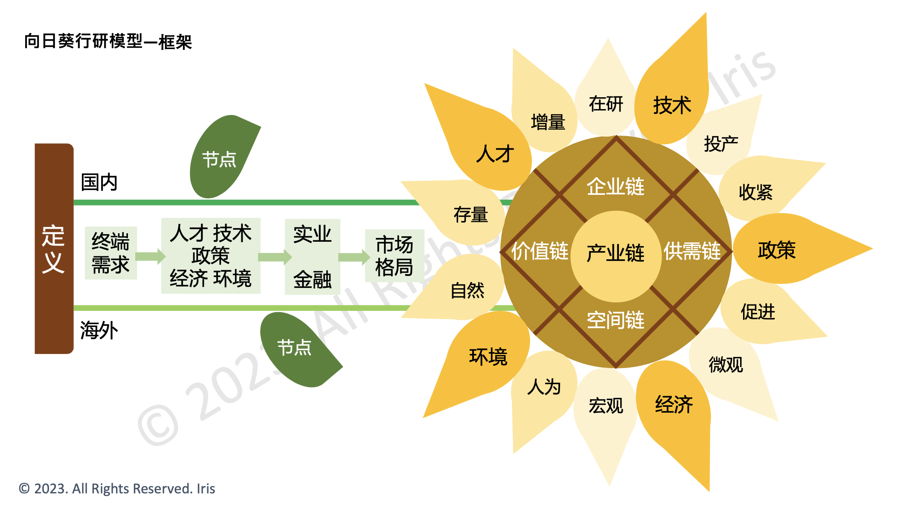
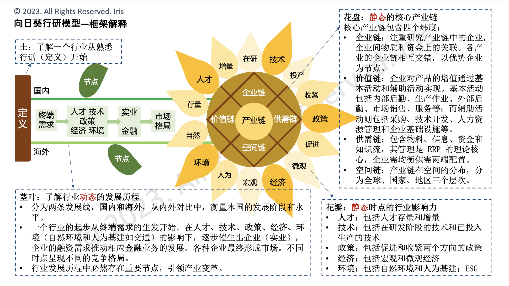

研究
by
Iris - Wed, 22 Mar 2023
Tags:
#Research
独立研究板块。研究报告完整版敬请致信垂询。
方法论 · Methodology


养老行业研究概览（2022.08）
- 需求驱动力: 我国养老产业的需求驱动力主要有 (1) 社会深度老龄化 (2) 养老压力逐年上升 (3) 老年人群消费能力提升。
- 行业关注度:
- 从网页搜索趋势来看，近 10 年海内外对养老的关注度不温不火。国内关注养老的百度用户主要集中在东南沿海的发达地区。
- 从偏好度(TGI)来看，除了 50 岁以上的中高年龄人群对 ”养老“ 有明显的搜索偏好外，20-29 岁的年轻人群也表现出了显著偏好，比 30-49 岁的人群更加关注 ”养老“ 话题。
- 企业数量: 根据 crunchbase，全球养老行业中的私有企业共 4,394 家，其中非盈利机构占比 29%。根据天眼查，我国养老相关企业在 2020 年达 4.5 万家以上, 2016-2020 年 CAGR 约为 23%，增速较快。但创业热度近年来有所下降。
- 融资进度: 根据 crunchbase, 目前海外养老行业主要的融资阶段依次为种子轮、A 轮、Pre-seed 轮。根据企查查创投数据库, 目前国内养老行业主要的融资阶段依次为战略融资、天使轮、A 轮。海内外融资进度均处于早期。
- 上市企业: 全球养老行业的上市企业主要为医疗集团或全球性的养老机构。国内养老行业上市公司较少，成立时间较短，规模较小。
- 市场规模
- 根据 Data Bridge Market Research，2020 年全球养老服务市场规模约为 1.1 万亿美元(约合人民币 7.4 万亿)，预计将在 2027 年达 1.9 万亿美元(约合人民币 12.8 万亿)，CAGR 7.0%。
- 根据艾媒咨询，2021 年中国养老产业的市场规模达 8.8 万亿元，同比增长 22.3%，预计 2023 年市场规模达 12.0 万亿元。 国内养老产业增速高于全球。
- 根据自下而上的自主测算，预计我国 2021 年老年消费市场规模为 5.19 万亿元，2025 年将达 7.89 万亿元，2021-25 CAGR 14.92%。其中，日常消费占比将由 57.0% 下降至 52.7%，而医疗康养将由 24.0% 提升至 26.0%。
- 企业链: 根据天眼查，养老相关企业性质分布中以小微企业为主，占比达到 56.7%。养老相关企业产业主要分布于租赁和商务服务业。
- 空间链: 从地域分布上来看，2021 年国内养老相关企业主要分布在山东、广东、四川三省。其中，养老院相关企业地域分布中，北京、河南、江苏位列前三。企业分布受各地养老压力的影响。
- 价值链
- 从商业模式上来看，国内养老服务中介主要采用员工制，便于质控，海外则有 SuperCarers、Careship 等佣金制的平台。全球第一护理网络 Carelinx 仅作为联络平台，收取注册费和服务费。
- 从定价上来看，海外养老服务有最低消费机制，人力成本高; 国内养老护理费用可由医保负担约 90%。养老地产收费标准尚不清晰，仍存在灰色地带。
- 政策
- 我国推行的养老模式主要为 “9073” 模式，在十一五规划中由上海率先提出，即 90% 的老年人居家养老，7% 社区养老， 3% 机构养老。目前我国的养老模式结构为 “9631“，与目标尚有差距。
- 2022 年 2 月，国务院印发《“十四五” 国家老龄事业发展和养老服务体系规划》，提出了 “十四五” 时期的发展目标，并明确了养老服务床位总量、养老机构护理型床位占比等 9 个主要指标。同时，部署了 9 方面具体工作任务。
- 2022 年，国家卫健委等 11 部门联合印发《关于进一步推进医养结合发展的指导意见》，提出实施智慧健康养老产业发展行动，并从数字化、信息化角度切入智慧健康养老产业，“互联网+医疗健康” 与 “互联网+护理服务” 再度升温。
- 内容待完善